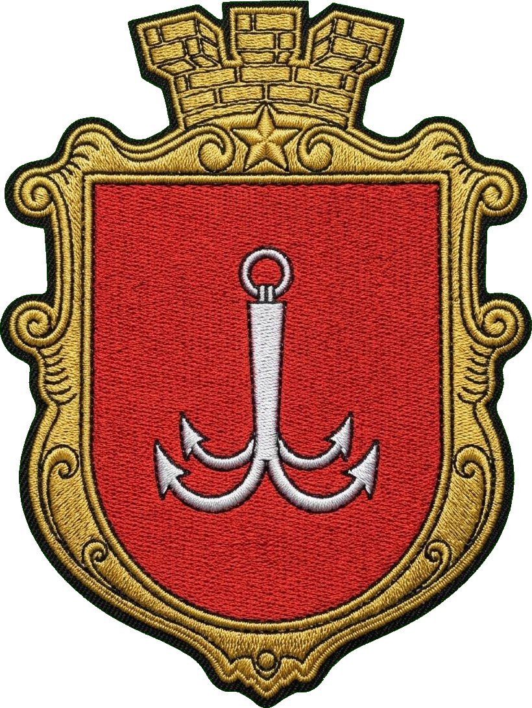
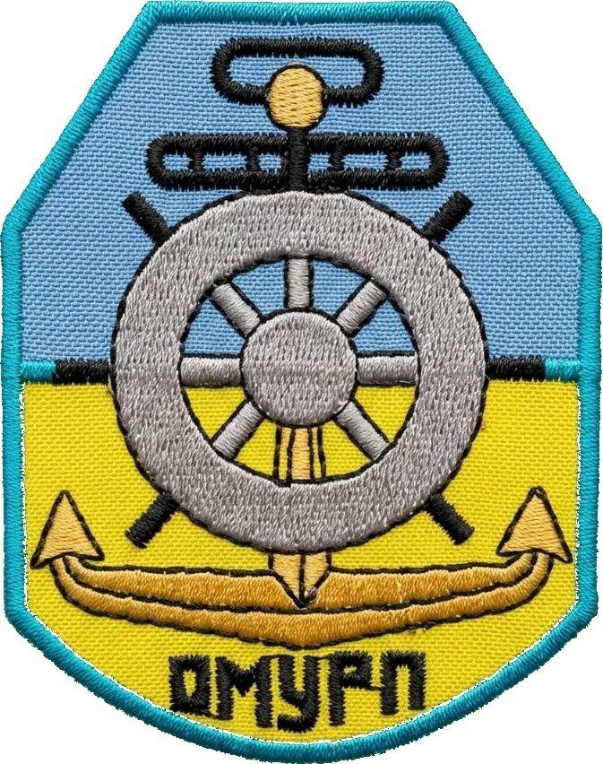

⚓ Captain Kyrylo Tkachenko



This UKFSE / UKLAP Grade 1 Master trainer was created for practical exam preparation: legal knowledge, oral questions, emergency actions, drills, MLC, ISM, ISPS, MAIB and UK administrative procedures.
Connect on LinkedIn